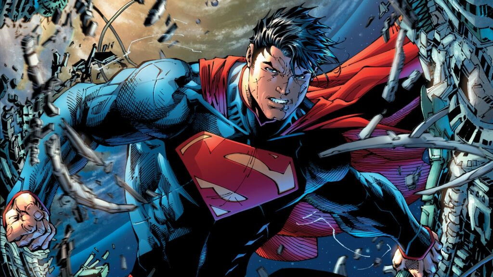

Superman
Historia
A história do Superman começa no planeta Krypton, uma sociedade avançada tecnologicamente, mas que está à beira da destruição. Jor-El, um cientista kryptoniano, descobre que o planeta está condenado devido à instabilidade de seu núcleo. Ele tenta alertar o Conselho Científico de Krypton, mas é ignorado. Determinado a salvar seu filho ainda não nascido, Kal-El, Jor-El constrói uma nave espacial e coloca seu filho nela, enviando-o para a Terra pouco antes da destruição de Krypton.
A nave de Kal-El chega à Terra e aterrissa em Smallville, uma pequena cidade rural no Kansas, onde é encontrado pelo casal de fazendeiros Jonathan e Martha Kent. Eles adotam o bebê e o chamam de Clark Kent. Logo eles percebem que Clark tem habilidades extraordinárias, como força sobre-humana, velocidade, visão de calor e a capacidade de voar.
Os Kents ensinam a Clark a usar seus poderes com responsabilidade e ajudar os outros. À medida que Clark cresce, ele descobre que sua verdadeira origem é de outro planeta e que seus poderes são resultado da gravidade mais fraca da Terra e do sol amarelo, que é diferente do sol vermelho de Krypton. Ele decide usar seus poderes para proteger os inocentes e combater o crime, adotando a identidade secreta de Superman.
Como Superman, Clark Kent se muda para Metrópolis, a grande cidade fictícia dos Estados Unidos, onde trabalha como repórter no jornal Daily Planet, disfarçando-se de um homem comum e tímido. Ele também se apaixona por Lois Lane, uma colega de trabalho, e estabelece amizades com outros personagens como Jimmy Olsen, Perry White e sua amiga de infância, Lana Lang.
Superman se torna um símbolo de esperança e justiça, lutando contra vilões como Lex Luthor, seu arqui-inimigo, e outros adversários poderosos, como Brainiac, Darkseid, Doomsday e General Zod. Ele também é membro fundador da Liga da Justiça, um grupo de super-heróis que se unem para proteger o universo de ameaças cósmicas.
